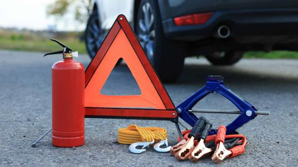

La Importancia de un Kit de Emergencia en Carretera
Diciembre, 2025 | Seguridad Vial
Desde herramientas básicas hasta suministros médicos, te mostramos qué elementos son indispensables para cualquier conductor responsable. Un kit bien equipado es un seguro de vida.
1. Señalización y Visibilidad
Dos triángulos de seguridad y un chaleco reflectante por persona. La visibilidad es crítica si te detienes en el arcén.

2. Herramientas Mínimas
Linterna con pilas de repuesto, cables de arranque, guantes, y una llave de tuercas. Es lo mínimo para una emergencia mecánica simple.
3. El Botiquín Imprescindible
Debe incluir gasas, vendas, antisépticos, tijeras y analgésicos. Revísalo cada 6 meses para asegurarte que las fechas de caducidad estén vigentes.
4. Agua y Nutrición
Lleva siempre agua embotellada y barras de energía o snacks no perecederos. Te mantendrán hidratado y lúcido mientras llega la ayuda.
5. La Asistencia como Último Recurso
Tu kit te ayuda en el momento, y tu plan ASISVial te asiste con grúa y mecánica. Ambos son indispensables para un conductor responsable.
Consultar Número de Asistencia